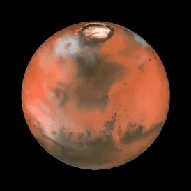

Mars

Mars is de vierde planeet vanaf de zon - een stoffige, koude woestijnwereld met een zeer dunne atmosfeer.
Mars is ook een dynamische planeet met seizoenen, poolijskappen, canyons, uitgedoofde vulkanen en bewijzen dat het in het verleden
nog actiever was.
Mars is een van de meest onderzochte lichamen in ons zonnestelsel,
en het is de enige planeet waar we rovers hebben gestuurd om door het buitenaardse landschap te zwerven
NASA currently has two rovers (Curiosity and Perseverance),
one lander (InSight), and one helicopter (Ingenuity) exploring the surface of Mars
LANGE DAGEN
Een dag op Mars duurt iets meer dan 24 uur.
Mars maakt een volledige baan rond de zon (een jaar in Marstijd) in 687 aardse dagen.
STERKE PLAATS VOOR HET LEVEN
Op dit moment kan het oppervlak van Mars het leven zoals wij dat kennen niet ondersteunen. Huidige missies bepalen het verleden en toekomstig potentieel van Mars voor leven.